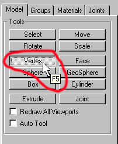
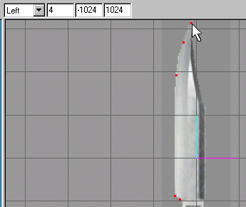
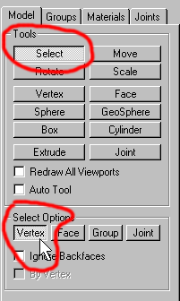

|
|
You are going to set vertices along all the distinct paths of the knife in the order of perceived depth. I start with the least or what would be paper thin, and work my way to a 3d plane that would be coming towards me. If you look at the knife, you should be able to tell by it, and this would represent the real worlds view of a knife, its cutting edge would be paper thin. This is where I would start my vertex path. Click on the button that says "Vertex."

Figure 1.5 Vertex tool selection
Now using the tool, click and set vertices along the knifes edge.

Figure 1.6 Vertex creation path
We will now be making a new path that will will have to be pulled a bit towards you, as the knife does get thicker at its back edge.
Figure 1.7 2nd Vertex creation path
You will have to click on the "Selection" tool and also click on the "Vertex" button below to select only vertices.

Figure 1.8 Selection tool set to Vertex selection
Now you will select only the 3 vertices that we just have created as in Figure 1.7 shows. Go to the "Front" or "Back" viewport so that you can move these vertices out a bit. You will have to keep in mind which direction you will be looking at the polygon faces. So if you were creating your model from the left view as I have you would probably want to use the "Front" viewport and pull the vertices to the right with only x axis free to move. You can lock down axis movement by clicking on the any of the "X", "Y", or "Z" buttons when you have the "Move" tool selected.
So this is the next step: click on the "Move" tool button and lock down the "Y," and "Z" axis. (See Figure 1.9).

Figure 1.9 Move tool with Y and Z locked
Once you have these locked, go to the "Front" viewport and pull the vertices to the left. Move the 3 vertices that we just have created as in Figure 1.7 to the left a bit until you have something that looks like in Figure 1.10.

Figure 1.10 Moving the vertices in the Front viewport
|
|